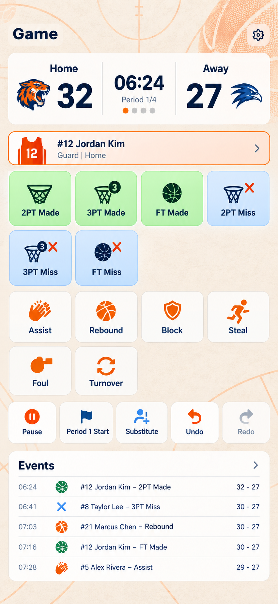
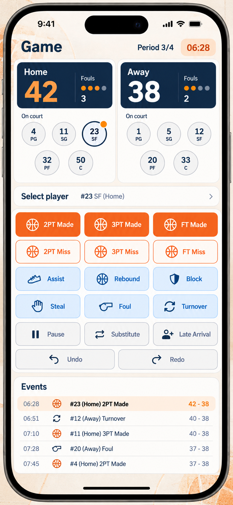
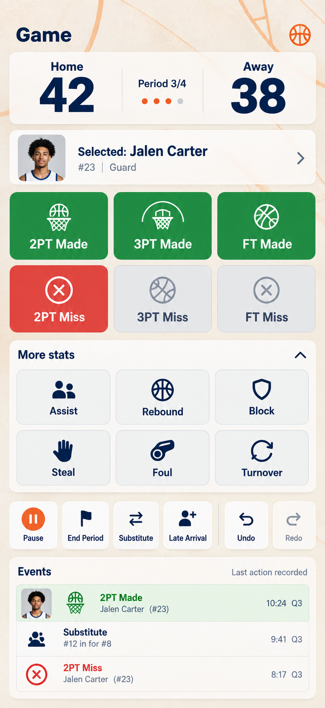

VIS 视觉设计师
任务：记分页 3 套功能优先 mockup
状态：方案 B 已根据源码审查补全
共同约束：沿用当前 App 的米白、深蓝、篮球橙编辑风格；不放版本号或水印；不隐藏核心得分、未得分、犯规、失误、暂停、换人、节次和撤销/重做。
A · Fast Lane

最接近当前记分页的心智模型：比分和球员上下文在上方，命中/未命中四列直达，次要统计与控制区保持可见，事件日志持续在底部。优势是迁移成本最低、记分最快；代价是密度最高，需要严格控制按钮尺寸和对比度。
B · Split Court

主客队分区展示，球队、比分、犯规和场上球员关系更清楚。优势是降低主客队误记；代价是顶部占用空间更多，小屏需要保持事件日志可滚动，不能让球队卡片挤掉动作区。
C · Focus Mode

放大比分和当前球员，得分按钮更容易快速命中。优势是比赛进行中视觉焦点最明确；代价是次要统计容易被弱化，因此实现时必须让助攻、篮板、盖帽、抢断、犯规、失误保持展开或一键可达。
方案 B 功能补全稿
{kind=link}
补全内容：语音麦克风与识别反馈、重置/结束/新建/协作/保存入口、总时钟与 REC、节次控制、Bonus/And-1、Game Data、动态篮板配置、暂停/继续、球队统计模式、可变数量的场上球员排列。犯规只显示当前数量，不显示犯满阈值或圆点。
主队使用篮球橙记分板，客队使用深蓝记分板；球员区域示例为主队 3 人、客队 4 人，实际实现应让网格继续适配其他人数。设计中的 View Roster 只能作为辅助入口，不能替代直接点击场上球员。
方案 B 五人版与原逻辑校对稿
{kind=link}
五人版让双方各显示 5 名球员，每个球员显示头像、号码和姓名，不显示位置；语音按钮移回 Events 卡片右上区域，作为透明/半透明的按住录音入口，不覆盖底部安全区或事件行。记录按钮压缩为四列布局。
篮板逻辑已按现有代码表达：设置页的“Rebound”和“Offensive / Defensive Rebound”是互斥开关；当前 mockup 展示后者，因此只显示 OREB 与 DREB，不同时显示通用 Rebound。另一种配置下，这两个位置应替换为单个 Rebound 按钮。
视觉验收标准
- 不以大背景图、装饰标题或过大的比分卡牺牲动作区。
- 命中/未命中、主客队、暂停/比赛状态和撤销/重做需要有明确且稳定的视觉语义。
- 所有现有数据字段和按钮功能继续存在；只允许重新分组、调整层级、颜色、间距和触达面积。
- 确认方案后再写 SwiftUI，并用带真实比赛事件的 iPhone 17 截图逐项对照。